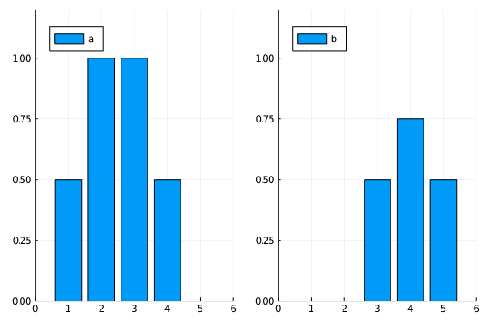

UnbalancedOptimalTransport
This package provides an MIT license, dependency-free implementation of Algorithm 1 of "Sinkhorn Divergences for Unbalanced Optimal Transport" [SFVTP19] in unbalanced_sinkhorn!, in a generic and extensible way. This is used to compute Sinkhorn divergences via sinkhorn_divergence!.
See Optimal transport for some background and a mathematical description of the quantities computed by this package, Public API for a description of the functions provided, and below for a quick tutorial.
While the code is generic, it is not currently written to dispatch to BLAS or non-scalar GPU operations, although such contributions would be welcomed.
Quick tutorial
julia> using UnbalancedOptimalTransport, Plots
julia> X = 1:4; # a set
julia> a_weights = [0.5, 1.0, 1.0, 0.5]; # weights on X
julia> Y = 3:5; # another set
julia> b_weights = [0.5, 0.75, 0.5]; # weights on Y
julia> plot(bar(X, a_weights, label="a"), bar(Y, b_weights, label="b"),
xlims = (0, 6), ylims=(0, 1.2), legend=:topleft);
We wish to move the a histogram to the b histogram with the least total cost, however we will clearly need to remove some mass as well. We choose the KL divergence to penalize mass destruction.
julia> a = DiscreteMeasure(a_weights, X);
julia> b = DiscreteMeasure(b_weights, Y);
julia> cost = (x, y) -> abs(x - y)
#1 (generic function with 1 method)
julia> ϵ = 0.01 # small regularization
0.01
julia> SD = sinkhorn_divergence!(UnbalancedOptimalTransport.KL(1.0), a, b, ϵ; C = cost)
1.6889992253532613The number SD provides us with a distance between the a and b histograms, as computed by the (unbalanced) Sinkhorn divergence.